Economía Internacional — Clase 2
Del mercantilismo a Ricardo: productividad, costos relativos y ganancias del comercio
26 de marzo de 2026
UMET - Licenciatura en Economía | 2026
¿Leyeron la bibliografía?
7 preguntas sobre Krugman, CEPAL y Frenkel
P1 — Krugman cap 1
- ¿Cuál es el patrón más llamativo del comercio mundial según Krugman?
- A) Los países solo exportan lo que no consumen internamente
- B) El comercio crece siempre al mismo ritmo que el PIB
- C) Los países comercian principalmente con países lejanos y muy diferentes
- D) La mayor parte del comercio es entre países desarrollados con economías similares
P1 — Respuesta: D
La mayor parte del comercio es entre países desarrollados similares
- Krugman destaca que el grueso del comercio es Norte-Norte (EEUU-Canadá, Alemania-Francia, EEUU-Japón)
- Exportan e importan los mismos tipos de productos: autos por autos, químicos por químicos
- Esto se llama comercio intraindustrial — lo vamos a ver en la Unidad 3
- A es falsa: los países exportan parte de lo que producen, no solo el excedente
- B es falsa: el comercio creció más rápido que el PIB (la apertura subió)
- C es falsa: la proximidad y la similitud importan más que la diferencia
P2 — Krugman cap 2
- ¿Por qué la balanza de pagos siempre "cierra" (suma cero)?
- A) Porque el FMI la ajusta al final de cada año
- B) Porque es un sistema de partida doble: todo pago genera un registro financiero equivalente
- C) Porque los bancos centrales intervienen para equilibrarla
- D) Porque los países no pueden tener déficit y superávit al mismo tiempo
P2 — Respuesta: B
Partida doble — todo pago genera un registro financiero equivalente
- La BP es un sistema contable: si importás un auto por $30.000, tenés que pagar con algo (dólares, deuda, baja de reservas)
- CC + Cuenta Capital + Cuenta Financiera + Errores = 0. Siempre. Por definición contable
- A es falsa: el FMI no toca la BP de ningún país, solo presta en crisis
- C es falsa: los bancos centrales intervienen pero eso es un movimiento más dentro de la BP
- D es falsa: sí pueden — déficit de CC Y superávit de cuenta financiera al mismo tiempo (Argentina años 90)
P3 — CEPAL 2002
- Según la CEPAL, la globalización tiene múltiples dimensiones. ¿Cuáles?
- A) Comercial, militar y diplomática
- B) Solo comercial y financiera
- C) Solo financiera y tecnológica
- D) Comercial, financiera, productiva, tecnológica, laboral y cultural
P3 — Respuesta: D
La globalización es multidimensional
- La CEPAL identifica al menos 6 dimensiones: comercial, financiera, productiva, tecnológica, laboral y cultural
- Reducir la globalización al comercio de bienes es un error — las asimetrías son diferentes en cada dimensión
- A es falsa: la dimensión militar es de relaciones internacionales, no del análisis económico de la CEPAL
- B es falsa: es la visión reduccionista que la CEPAL critica explícitamente
- C es falsa: omite la dimensión comercial, que sigue siendo central
P4 — CEPAL 2002
- ¿Cuál es la principal asimetría que identifica la CEPAL en la globalización?
- A) Las exportaciones siempre son más caras que las importaciones
- B) Los aranceles son más altos en Asia que en América Latina
- C) Los países desarrollados fijan las reglas y los en desarrollo las reciben con escasa participación
- D) Los países grandes comercian más que los pequeños
P4 — Respuesta: C
Los países desarrollados fijan las reglas
- Las reglas del comercio (OMC), las finanzas (FMI) y la propiedad intelectual (TRIPS) fueron diseñadas por los países desarrollados
- Los países en desarrollo participan pero con mucha menor capacidad de negociación
- Base del argumento estructuralista que vemos en la Unidad 4 con Prebisch
- A es falsa: no es una generalización válida, depende de cada país y momento
- B es falsa: no es la asimetría principal — el problema es quién escribe las reglas, no los aranceles
- D es falsa: es un hecho trivial, no una asimetría estructural
P5 — Frenkel 2008
- Según Frenkel, ¿por qué un TCR competitivo favorece el desarrollo?
- A) Porque reduce automáticamente la inflación
- B) Porque atrae más inversión extranjera en el sector financiero
- C) Porque hace que las importaciones sean más baratas para la industria
- D) Porque protege la industria nacional y estimula las exportaciones no tradicionales
P5 — Respuesta: D
Protege la industria y estimula exportaciones no tradicionales
- TCR alto (peso barato) encarece importaciones → protege industria local
- TCR alto abarata exportaciones → empresas que no podían exportar ahora pueden
- Es una política industrial vía precios relativos
- A es falsa: al contrario, Frenkel dice que un TCR competitivo GENERA inflación
- B es falsa: la inversión financiera prefiere peso caro (carry trade), no peso barato
- C es falsa: es exactamente al revés — TCR alto encarece las importaciones
P6 — Frenkel 2008
- ¿Cuál es la principal tensión de sostener un TCR competitivo según Frenkel?
- A) Genera presión inflacionaria que erosiona la competitividad ganada
- B) Genera desempleo en el sector exportador
- C) Obliga a subir las tasas de interés al máximo
- D) Reduce las reservas internacionales del banco central
P6 — Respuesta: A
La inflación erosiona la competitividad
- Para mantener TCR alto, el BCRA compra dólares → inyecta pesos → presión inflacionaria
- Si la inflación sube, P sube → TCR = e × P*/P baja → se pierde la competitividad
- Es un círculo vicioso: el TCR competitivo genera la inflación que lo destruye
- B es falsa: al contrario, TCR competitivo favorece al sector exportador
- C es falsa: tasas altas atraen capital especulativo que aprecia el peso — contradicción
- D es falsa: al contrario, el BCRA compra dólares y SUBE las reservas
P7 — Pregunta integradora
- Cuando el peso se aprecia (TCR bajo), ¿qué pasa con la apertura comercial y la cuenta corriente?
- A) La apertura sube porque aumentan las exportaciones y mejora la cuenta corriente
- B) La apertura baja porque se cierra la economía y la cuenta corriente mejora
- C) La apertura sube por el aumento de importaciones, la CC se deteriora y se acumula deuda
- D) No hay relación entre el TCR, la apertura y la cuenta corriente
P7 — Respuesta: C
Importaciones suben, CC se deteriora, se acumula deuda
- Con peso caro: importaciones se abaratan y crecen, exportaciones se encarecen y caen
- La apertura puede subir porque las importaciones crecen más de lo que caen las exportaciones
- La cuenta corriente se deteriora (más M que X = déficit)
- El déficit se financia con deuda o caída de reservas
- Este es exactamente el patrón de la Convertibilidad (1991-2001) y de 2016-2018
- A es falsa: con peso caro las exportaciones caen, no suben
- B es falsa: la apertura puede subir por el boom importador (Argentina 90s)
- D es falsa: la relación TCR-apertura-CC es el corazón de la macroeconomía abierta
Unidad 2 — Teorías clásicas del comercio
Del mercantilismo a Ricardo
Unidad 2: ¿Por qué comercian los países?
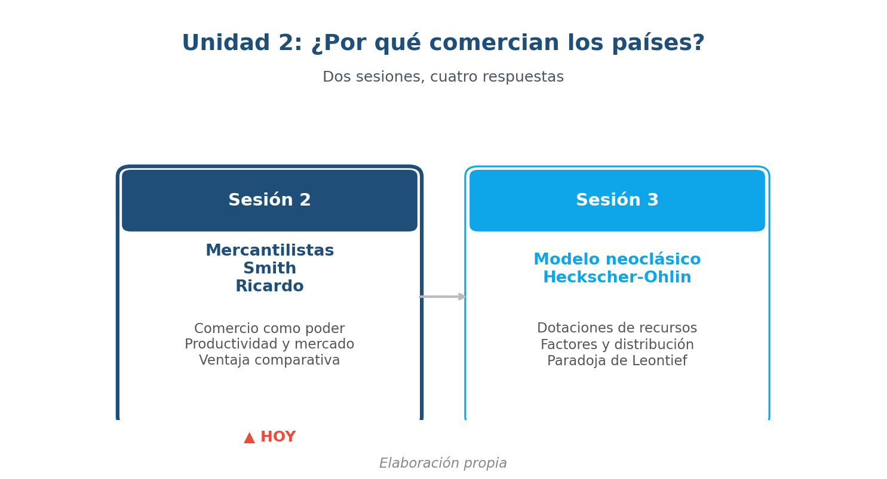
Fuente: Elaboración propia
- Clase 2 (hoy): Mercantilistas y Smith — comercio, productividad. Ricardo — costos relativos y ganancias del comercio
- Clase 3: Modelo neoclásico — dotaciones de recursos. Heckscher-Ohlin — factores y distribución
Agenda de hoy
- El debate fundacional: mercantilistas vs Adam Smith
- División del trabajo, ventaja absoluta y sus límites
- David Ricardo: contexto político y las Corn Laws
- Ventaja comparativa: costos de oportunidad y ganancias del comercio
- De la teoría a los datos: ventaja comparativa revelada (RCA)
- Cierre: qué explica Ricardo y qué deja abierto
El mundo mercantilista (siglos XVI-XVIII)
Comercio como instrumento de poder
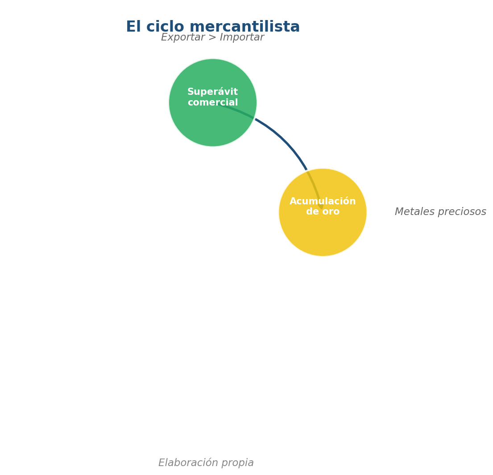
Fuente: Elaboración propia
- No es una "escuela" unificada: son ideas compartidas por asesores de cortes europeas
- Idea central: la riqueza de una nación = acumulación de metales (oro y plata)
- El objetivo: superávit comercial → entra oro al país
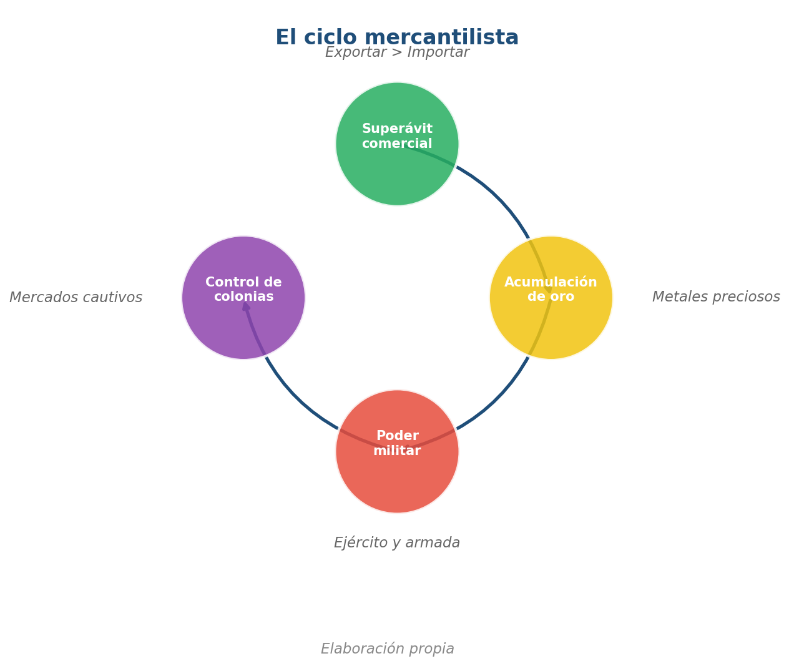
Fuente: Elaboración propia
- El oro financia poder militar (ejércitos, armadas)
- El poder permite controlar colonias y rutas comerciales
- Contexto: imperios coloniales, competencia entre potencias europeas
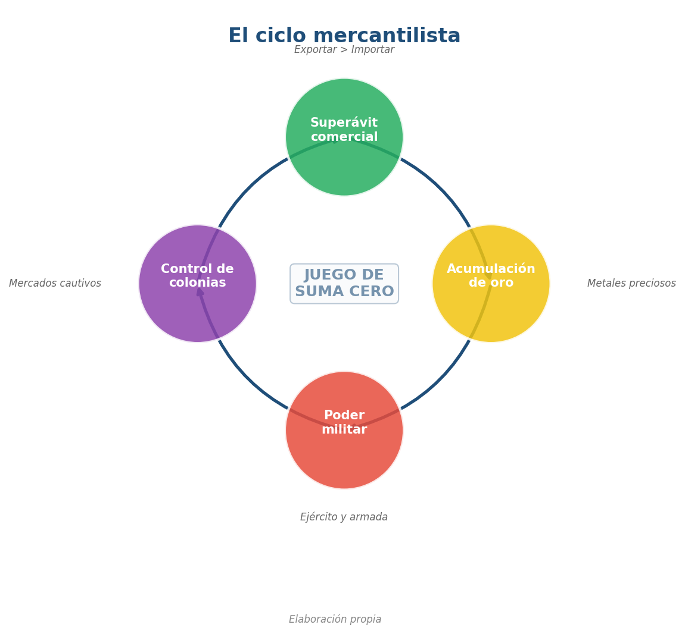
Fuente: Elaboración propia
- Las colonias generan más superávit → el ciclo se retroalimenta
- Comercio = juego de suma cero: si uno gana, otro pierde
- La riqueza no se crea, se redistribuye entre potencias
Paso 1 / 3
Mercantilismo: políticas y lógica
El "manual" del comercio como poder
- Objetivo: superávit comercial permanente (exportar más que importar)
- Aranceles y prohibiciones: proteger producción nacional, limitar importaciones
- Monopolios comerciales: compañías con exclusividad (East India Co., VOC holandesa)
- Colonias como mercado cautivo: fuente de materias primas + destino de manufacturas
- Navigation Acts (Inglaterra, 1651): solo barcos ingleses pueden comerciar con colonias
Tecnología, Reglas y Poder: dos visiones del comercio
El mismo marco de la Clase 1, distinto peso
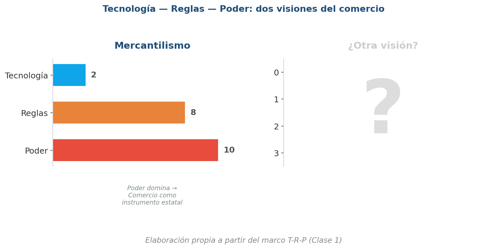
Fuente: Elaboración propia a partir del marco de Clase 1
- Mercantilismo: Poder domina → Reglas restrictivas → Tecnología secundaria
- En la Clase 1 usamos T-R-P para leer la HISTORIA; ahora lo usamos para leer las TEORÍAS
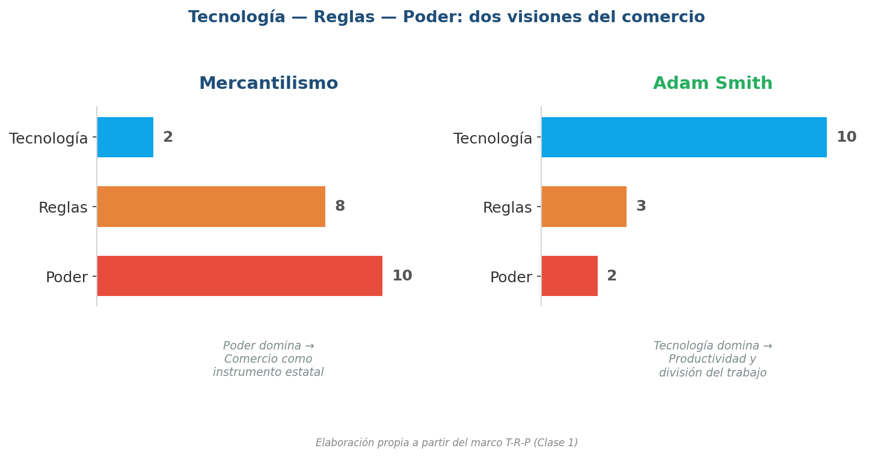
Fuente: Elaboración propia a partir del marco de Clase 1
- Smith: Tecnología domina (productividad) → Reglas deben liberalizarse → Poder no debe distorsionar
- No es que uno tenga "razón" y otro no: cada uno mira el comercio desde un lugar distinto
Paso 1 / 2
Adam Smith (1776): una nueva idea de "riqueza"

Fuente: Adam Smith, An Inquiry into the Nature and Causes of the Wealth of Nations (1776)
- Mercantilismo: riqueza = metales (oro/plata) + poder del Estado
- Smith: riqueza = capacidad de producir bienes y servicios (ingreso real)
- El comercio no es juego de suma cero → puede ser mutuamente beneficioso
- El problema no es "vender más que el otro" sino producir más con el mismo trabajo
División del trabajo: el motor de la productividad
El mecanismo central de Smith
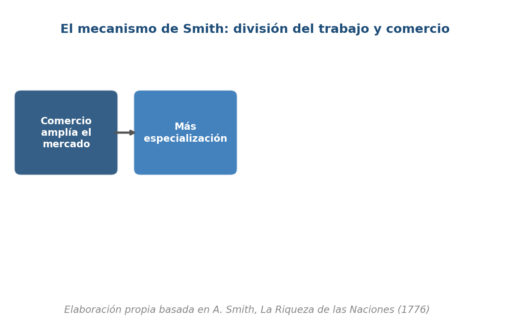
Fuente: Elaboración propia
- Comercio (interno y externo) amplía el mercado
- Mercado más grande → más oportunidades de especialización
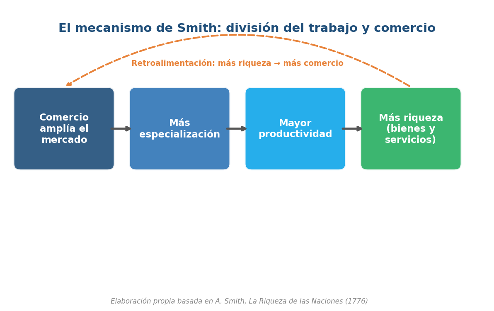
Fuente: Elaboración propia
- Especialización → más productividad → más riqueza
- El ciclo se retroalimenta: riqueza genera más comercio → más especialización
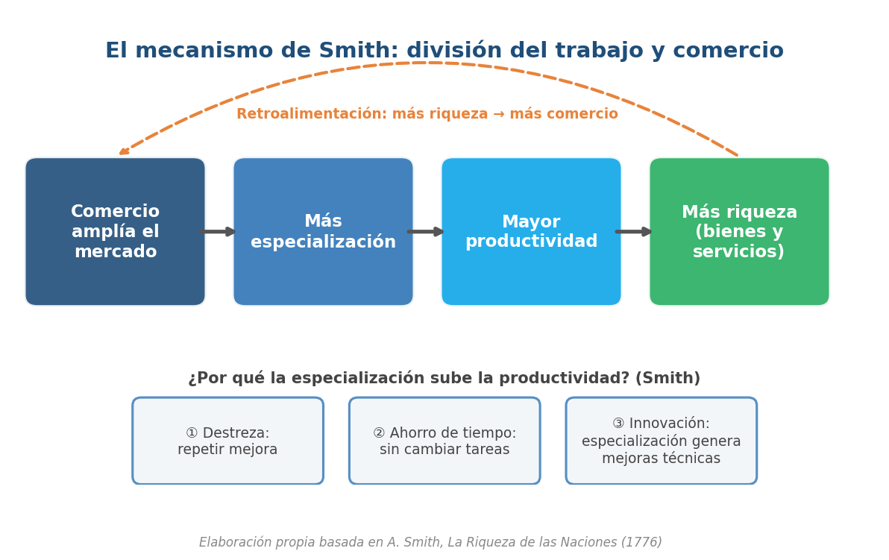
Fuente: Elaboración propia
- Tres razones de Smith: más destreza, ahorro de tiempos, innovación en herramientas
- Pero la especialización tiene un límite: el tamaño del mercado
Paso 1 / 3
"La división del trabajo está limitada por la extensión del mercado"
¿Por qué el comercio internacional importa para Smith?
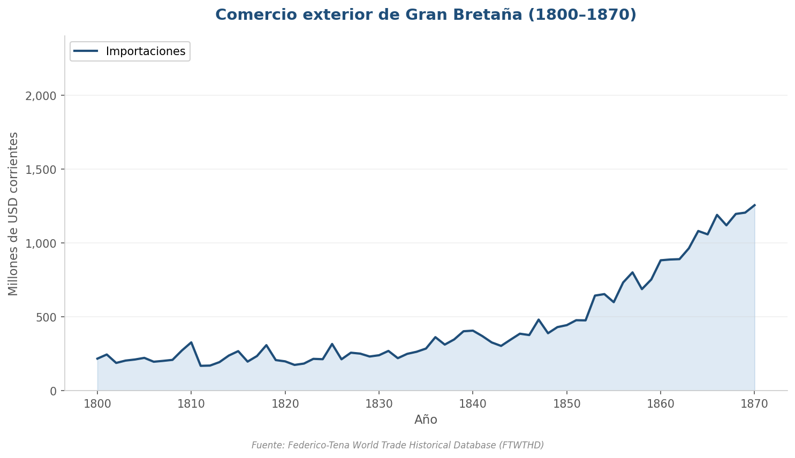
Fuente: Federico-Tena World Trade Historical Database
- Gran Bretaña siglo XIX: las importaciones crecen sostenidamente
- Sin comercio, el mercado es solo el mercado interno
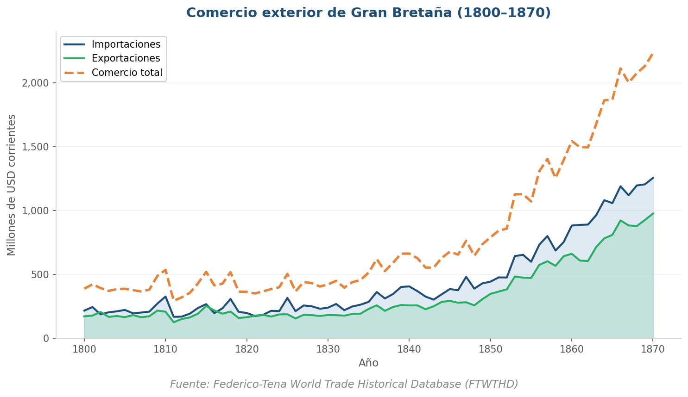
Fuente: Federico-Tena World Trade Historical Database
- Las exportaciones y el comercio total acompañan el crecimiento
- El comercio imperial amplió mercados y acompañó la Revolución Industrial
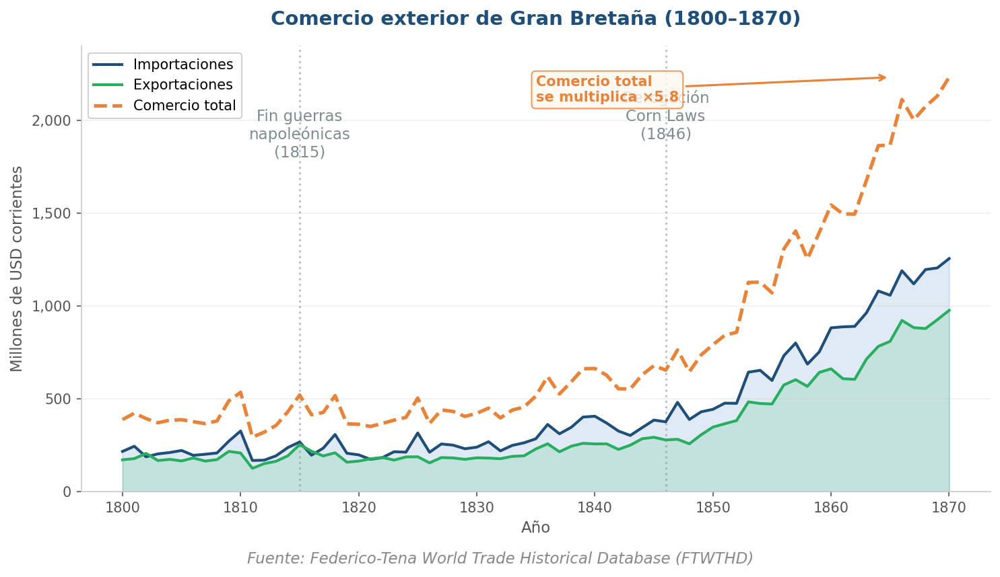
Fuente: Federico-Tena World Trade Historical Database
- Guerras Napoleónicas y Corn Laws marcaron quiebres en la trayectoria
- Lección smithiana: comercio → mercado más grande → especialización → productividad → riqueza
Paso 1 / 3
Ventaja absoluta: ¿por qué ambos ganan con el comercio?
Autarquía vs. comercio — la ganancia se hace visible
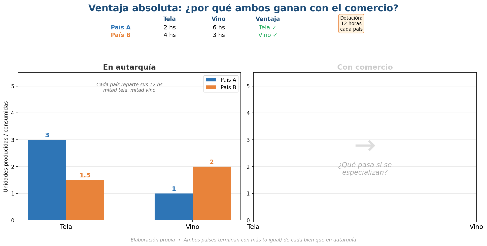
Fuente: Elaboración propia
- Ventaja absoluta: un país produce un bien con menos trabajo que otro
- A necesita 2 hs por tela (B necesita 4) → A tiene ventaja en tela
- B necesita 3 hs por vino (A necesita 6) → B tiene ventaja en vino
- En autarquía cada país reparte su tiempo → produce poco de ambos
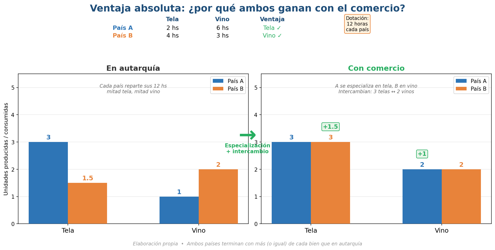
Fuente: Elaboración propia
- Con comercio: cada uno se especializa + intercambian
- A dedica todo a tela (6T), B a vino (4V), intercambian 3T ↔ 2V
- Resultado: ambos terminan con 3T + 2V — más que en autarquía
- B ganó +1,5 telas, A ganó +1 vino
Paso 1 / 2
Smith y la política comercial: no es dogma
Crítica a restricciones... con matices
- Crítica a monopolios: distorsionan precios y frenan competencia
- Crítica a restricciones coloniales: benefician a grupos específicos, no al bienestar general
- Pero Smith reconoce excepciones: defensa nacional, represalia, industrias estratégicas
- El debate no es "libre comercio sí o no" sino ¿quién gana y quién pierde con cada restricción?
¿Y si un país es mejor en todo?
El límite de la ventaja absoluta
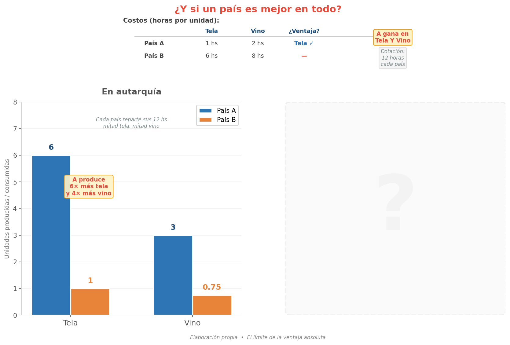
Fuente: Elaboración propia
- A produce tela con 1 h y vino con 2 h. B necesita 6 y 8 h → A tiene ventaja absoluta en ambos
- En autarquía: A produce 6T y 3V, B apenas 1T y 0,75V
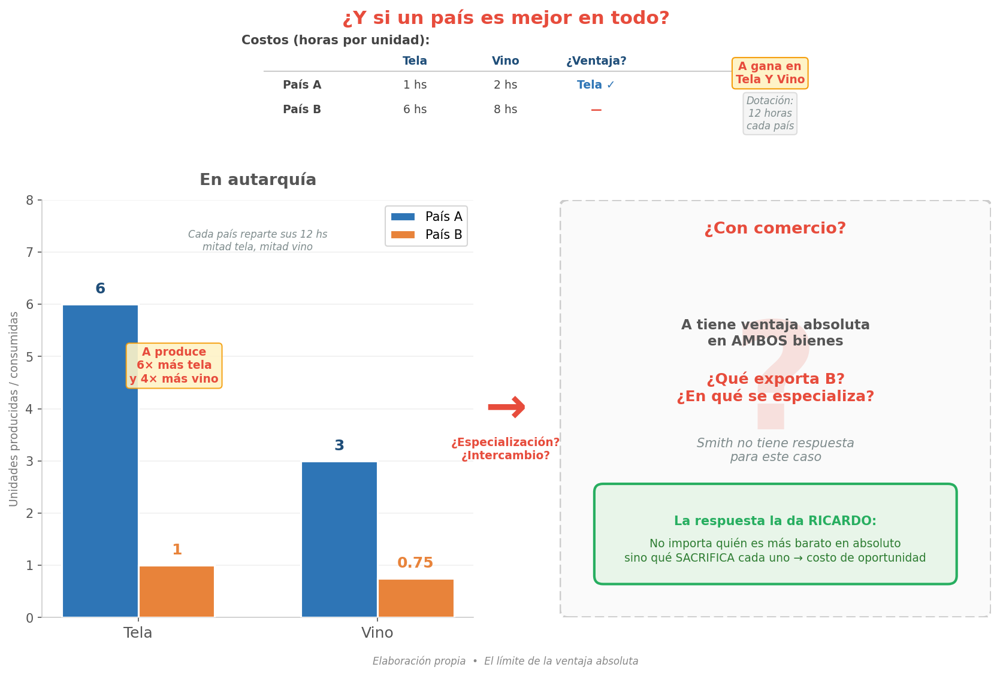
Fuente: Elaboración propia
- Según Smith, A debería producir todo. ¿Entonces B no exporta nada?
- Pero en la realidad sí hay comercio entre países desiguales → Smith no tiene respuesta
- Ricardo resuelve este problema → lo que importa es el costo de oportunidad
Paso 1 / 2
Lo que Smith nos deja
- Mercantilismo: comercio = poder, riqueza = oro, juego de suma cero
- Smith: riqueza = productividad, comercio amplía mercado → más división del trabajo
- Ventaja absoluta: cada país produce lo que hace más barato (caso simple)
- Límite: si uno es mejor en todo, Smith no alcanza → entra Ricardo
- T-R-P: mercantilistas pesan poder, Smith pesa tecnología — cada teoría tiene su lente
De Smith a Ricardo
¿Qué pasa cuando un país es mejor en todo?
El problema que Smith dejó abierto
- A: Tela = 1 hora, Vino = 2 horas
- B: Tela = 6 horas, Vino = 8 horas
- A tiene ventaja absoluta en ambos bienes
- Smith no puede explicar por qué B exportaría algo
- Ahora: Ricardo resuelve este problema
David Ricardo (1772-1823)

Fuente: Retrato por Thomas Phillips (1821), National Portrait Gallery, Londres
- Londres, 1772. Hijo de familia judía sefardí de origen holandés. Trabajó en la Bolsa de Londres desde los 14 años
- A los 21 se casa fuera de la fe, rompe con su familia y se hace rico por cuenta propia como corredor de bolsa
- A los 27 lee La Riqueza de las Naciones de Smith y se vuelca a la economía política
- Obra principal: Principios de economía política y tributación (1817) — distribución del ingreso entre renta, ganancias y salarios
- Parlamentario (1819-1823): defendió el libre comercio contra las Corn Laws
- Su argumento de ventaja comparativa sigue siendo uno de los más citados en toda la economía — 200 años después
Ricardo (1817): libre comercio en medio de un conflicto distributivo
Las Corn Laws y el precio del pan
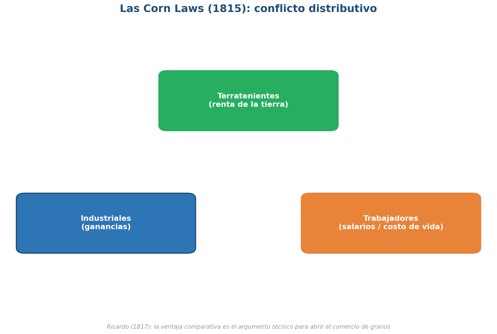
Fuente: Elaboración propia
- Tres actores con intereses opuestos: terratenientes, industriales y trabajadores
- El ingreso se distribuye entre renta, ganancia y salarios
- ¿Qué pasa cuando se protege el grano importado?
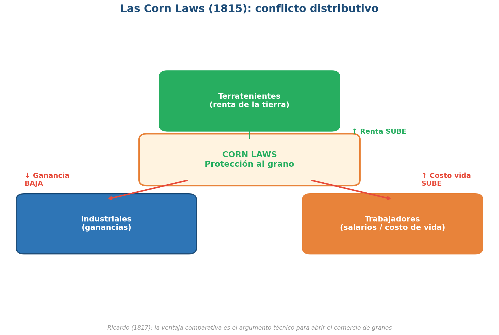
Fuente: Elaboración propia
- 1815: se aprueban las Corn Laws → protegen precio del grano
- Terratenientes: renta SUBE (beneficiados)
- Industriales y trabajadores: PIERDEN (alimentos caros)
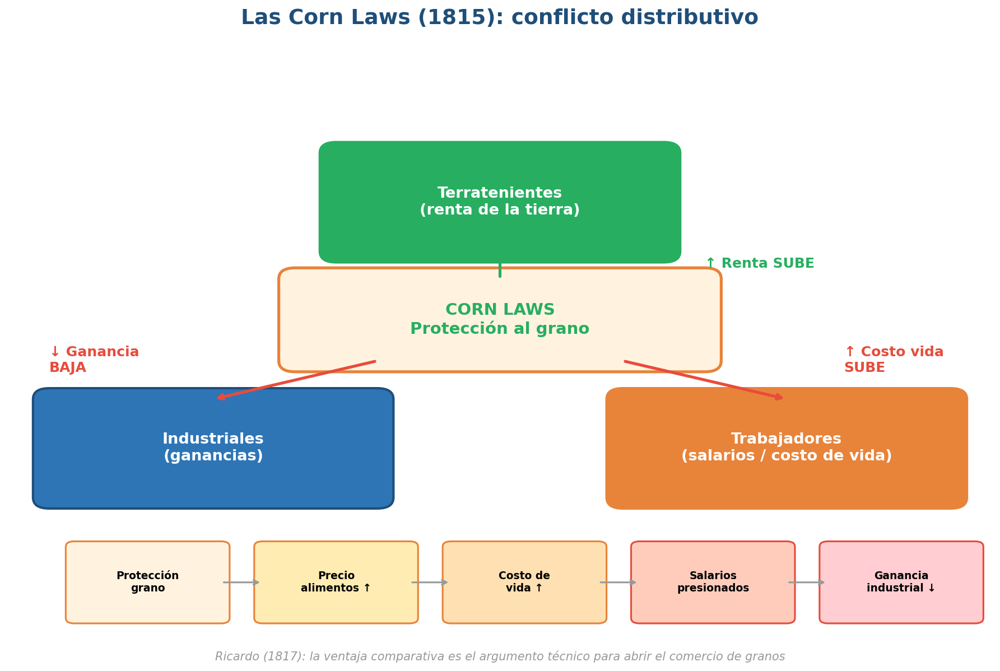
Fuente: Elaboración propia
- La cadena causal: protección → precio alimentos ↑ → costo de vida ↑ → salarios presionados → ganancia industrial ↓
- Ricardo: la ventaja comparativa es el argumento técnico para abrir el comercio
Paso 1 / 3
La gran pregunta de Ricardo: renta, salarios y ganancias
El comercio no es neutral — cambia la distribución
- Ricardo organiza la economía por tres ingresos: renta (tierra), salarios (trabajo), ganancias (capital)
- Si sube el precio del grano → sube costo de vida → presión sobre salarios → cae la ganancia industrial
- Protección agrícola → beneficia terratenientes, perjudica a industriales y trabajadores
- El comercio redistribuye: importar grano barato → baja renta, sube ganancia, abarata consumo
Autarquía: el punto de partida
Cada país solo, con sus propios precios
- Autarquía = economía cerrada: todo lo que consume se produce internamente
- En autarquía, cada país tiene un precio relativo interno (determinado por su tecnología)
- Precio relativo = cuánto de un bien "cuesta" en términos del otro
- Costo de oportunidad = cuántas unidades del otro bien sacrifico para producir 1 unidad de este
- Si los precios relativos son distintos entre países → hay incentivo a comerciar
Costos de oportunidad: ¿qué sacrifica cada país?
Los mismos números de hace un rato, distinta lectura
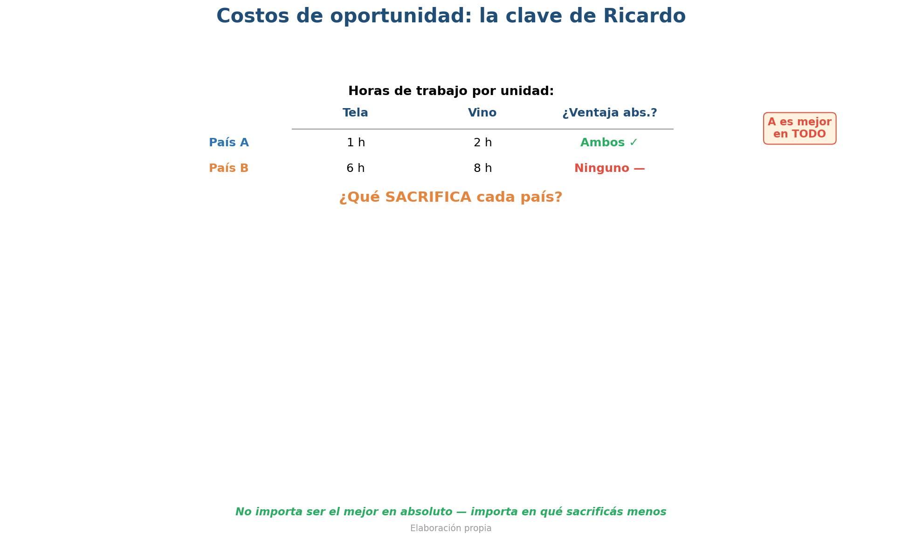
Fuente: Elaboración propia
- A es mejor en ambos bienes (ventaja absoluta en todo)
- B no tiene ventaja absoluta en nada
- Pregunta clave: ¿qué sacrifica cada país al producir?
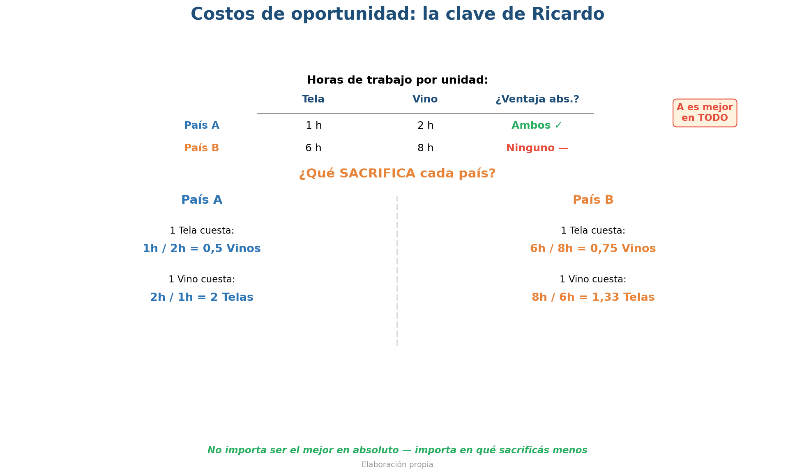
Fuente: Elaboración propia
- País A: 1 Tela cuesta 0,5 Vinos. 1 Vino cuesta 2 Telas
- País B: 1 Tela cuesta 0,75 Vinos. 1 Vino cuesta 1,33 Telas
- A sacrifica menos para Tela (0,5 < 0,75)
- B sacrifica menos para Vino (1,33 < 2)
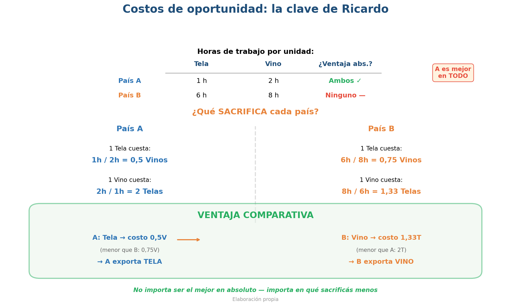
Fuente: Elaboración propia
- Ventaja comparativa: A exporta Tela, B exporta Vino
- B tiene algo para exportar — donde su desventaja es menor
- No importa ser el mejor en absoluto — importa en qué sacrificás menos
Paso 1 / 3
El precio mundial: ¿de dónde sale?
Cuando dos países se abren al comercio, aparece un precio internacional
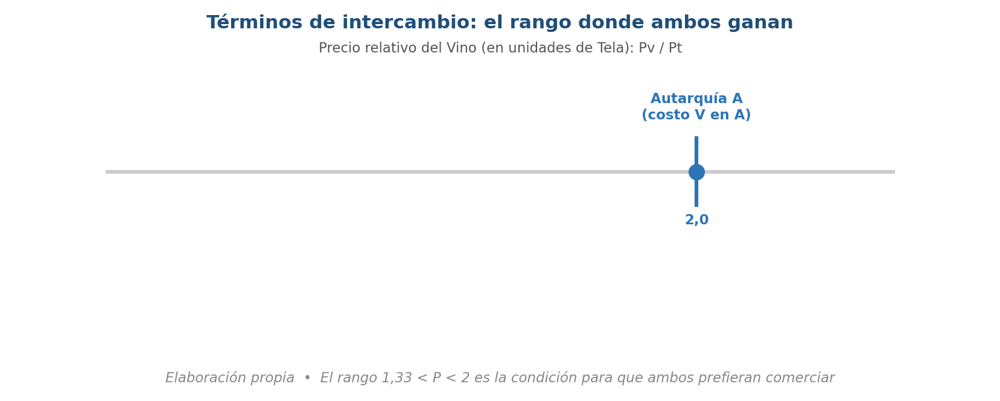
Fuente: Elaboración propia
- En autarquía, A valúa 1 Vino = 2 Telas (su costo de oportunidad)
- Este es el precio de referencia de A — si el precio es mayor, A prefiere producirlo
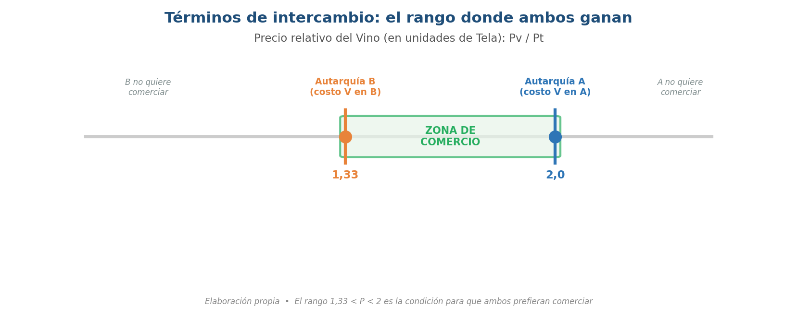
Fuente: Elaboración propia
- B valúa 1 Vino = 1,33 Telas — su costo de oportunidad es menor
- El rango 1,33 < P < 2 es la zona donde ambos ganan comerciando
- Fuera del rango, uno de los dos prefiere no comerciar
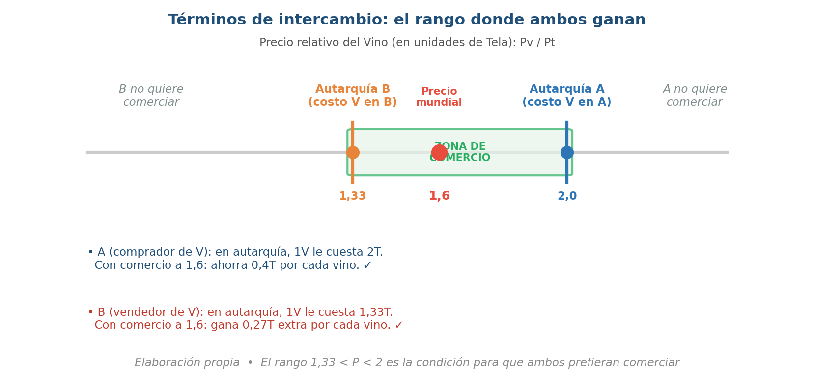
Fuente: Elaboración propia
- Precio mundial P = 1,6: A ahorra 0,4T por vino, B gana 0,27T extra
- Ambos están mejor que en autarquía — el precio intermedio lo hace posible
Paso 1 / 3
Ventaja comparativa en acción: autarquía vs comercio
Con precio mundial P = 1,6, ambos terminan con más (dotación: 48 horas)
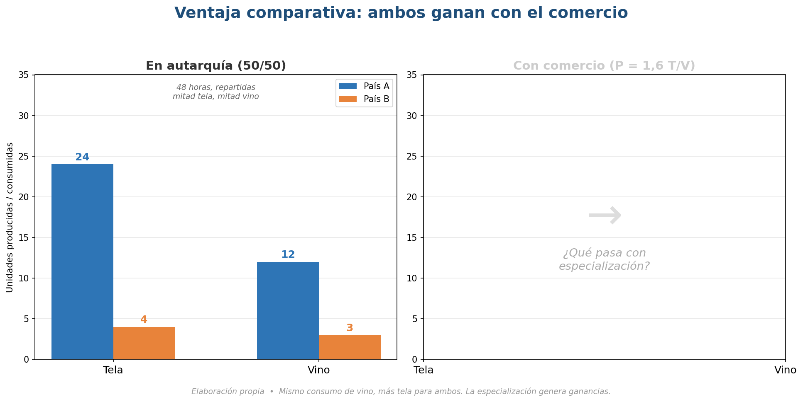
Fuente: Elaboración propia
- Autarquía (50/50): A produce 24T + 12V, B produce 4T + 3V
- A es mucho más productivo — pero ¿puede B ganar del comercio?
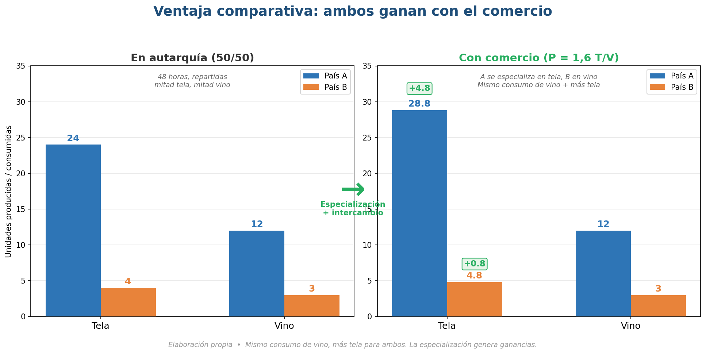
Fuente: Elaboración propia
- Con comercio: A se especializa en Tela (48T), B en Vino (6V)
- A: 28,8T + 12V → ganó +4,8 telas manteniendo el mismo vino
- B: 4,8T + 3V → ganó +0,8 telas manteniendo el mismo vino
- Ambos ganan — el precio mundial intermedio lo hace posible
Paso 1 / 2
Frontera de Posibilidades de Producción (PPF)
Todo lo que un país puede producir con sus recursos
- PPF = combinaciones máximas de producción dados los recursos
- Con 48 horas de trabajo, la restricción es: \(a_{LT} \times T + a_{LV} \times V = L\)
- País A (Tela=1h, Vino=2h): \(T + 2V = 48\) → máx T = 48, máx V = 24
- País B (Tela=6h, Vino=8h): \(6T + 8V = 48\) → máx T = 8, máx V = 6
- La pendiente de la PPF = costo de oportunidad = precio relativo en autarquía
País A: consumir más allá de lo que puede producir
La línea de intercambio "sale" de la PPF
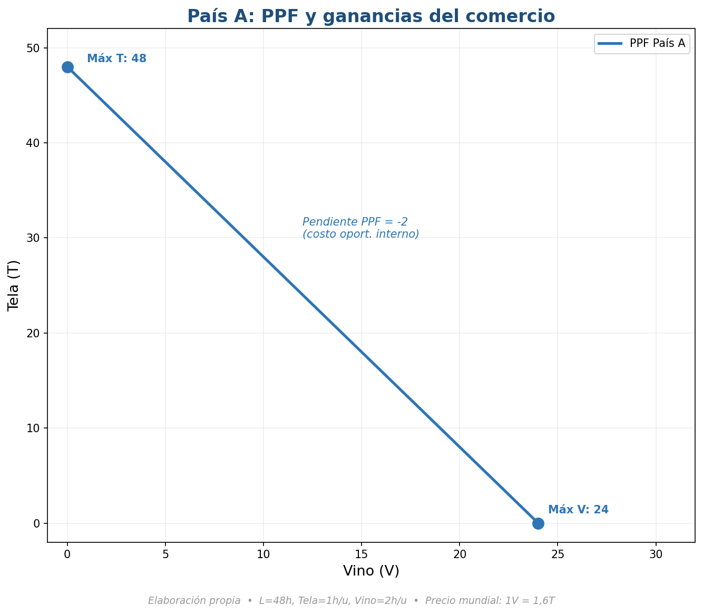
Fuente: Elaboración propia
- PPF de A: recta de (T=48, V=0) a (T=0, V=24)
- Pendiente = -2 → costo de oportunidad interno
- Todo lo que A puede producir en autarquía
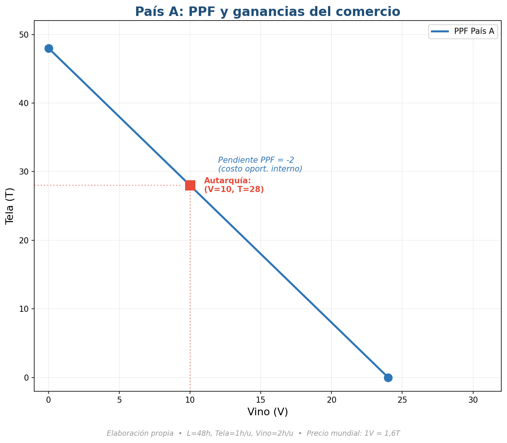
Fuente: Elaboración propia
- En autarquía (50/50): A consume V=10, T=28 — sobre la PPF
- No puede consumir fuera de la frontera
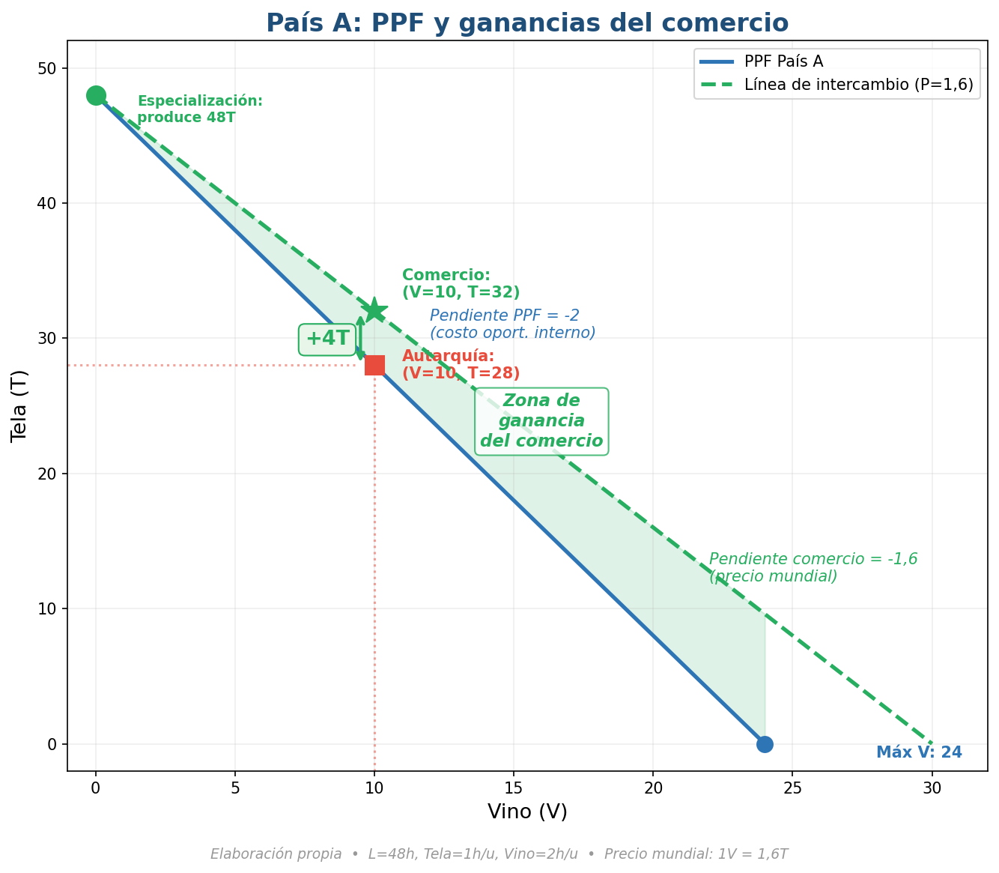
Fuente: Elaboración propia
- A se especializa en Tela (48T) y compra Vino a P=1,6
- Línea de intercambio más plana que PPF → nuevas combinaciones
- Para V=10: comercio T=32 vs autarquía T=28 → ganancia = +4T
- La zona sombreada = combinaciones imposibles en autarquía
Paso 1 / 3
País B también gana: comercio como nueva frontera
Incluso siendo menos productivo en todo, B consume más con comercio
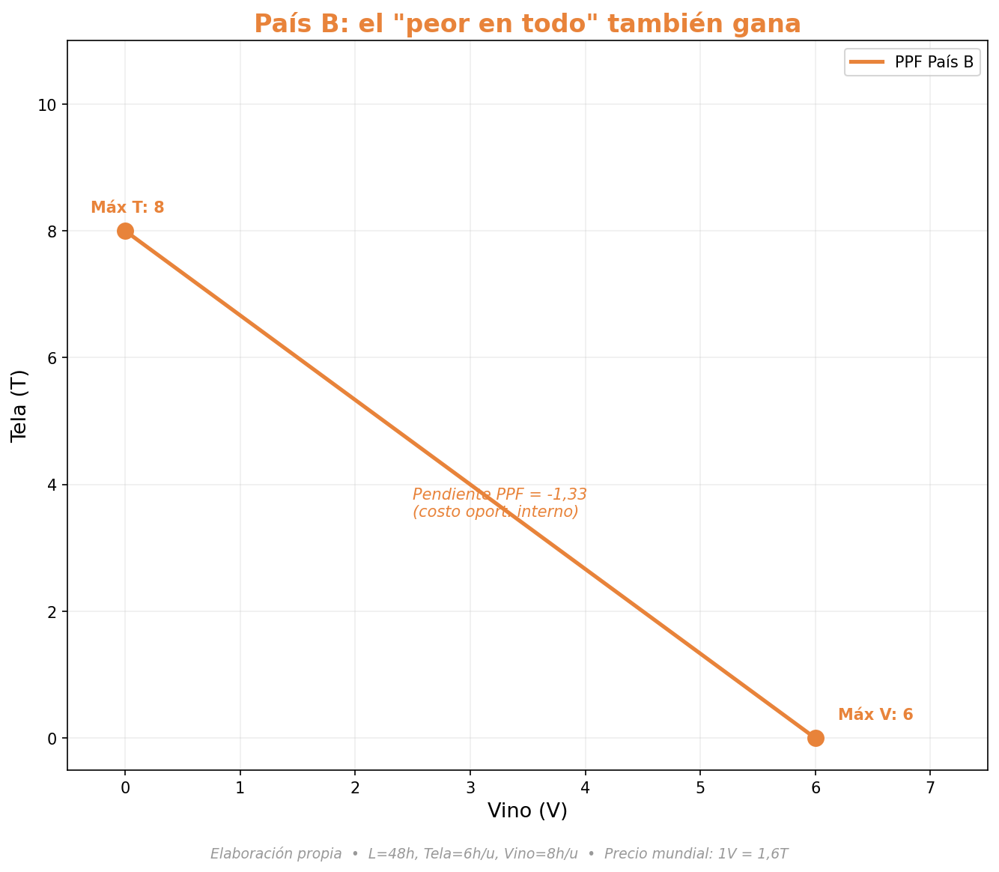
Fuente: Elaboración propia
- PPF de B: recta de (T=8, V=0) a (T=0, V=6)
- Pendiente = -1,33 → costo de oportunidad interno
- B es menos productivo en todo — su PPF es mucho más chica
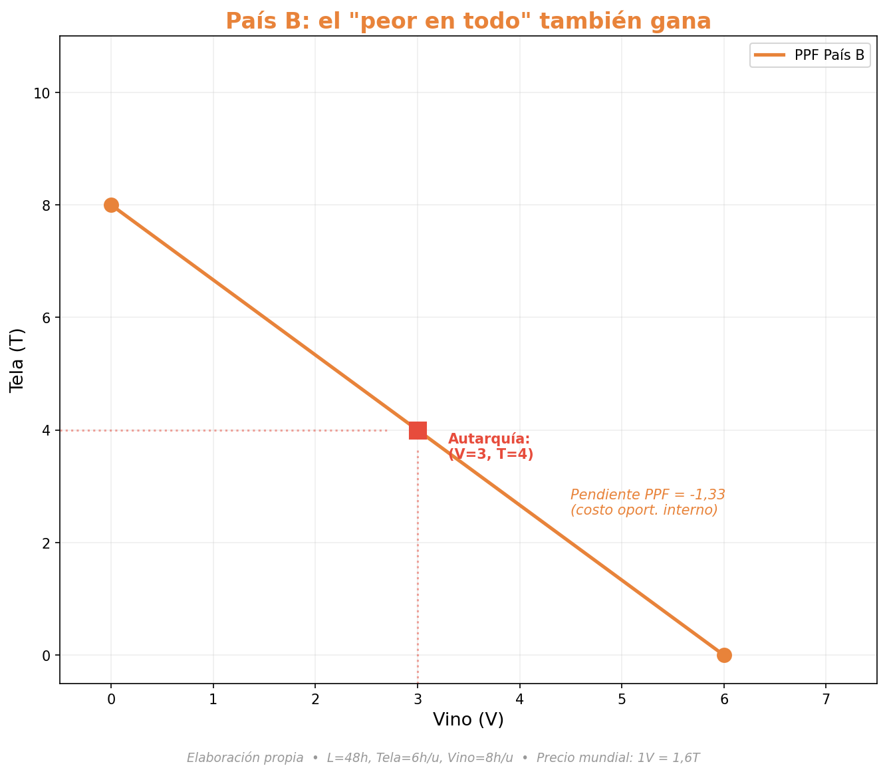
Fuente: Elaboración propia
- En autarquía (50/50): B consume V=3, T=4 — sobre la PPF
- No puede consumir fuera de su (pequeña) frontera
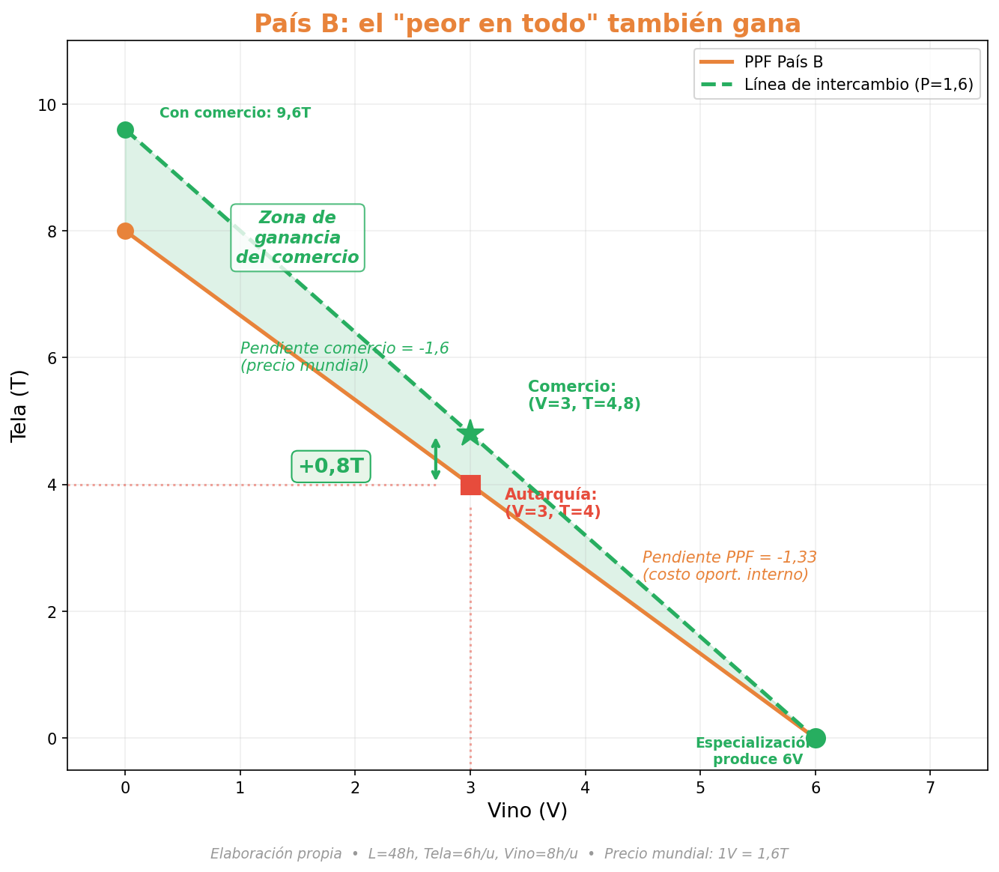
Fuente: Elaboración propia
- B se especializa en Vino (6V) y vende a P=1,6
- Intercepto T con comercio: 9,6 > 8 (máx en autarquía)
- Para V=3: comercio T=4,8 vs autarquía T=4 → ganancia = +0,8T
- El "peor en todo" también gana con el comercio
Paso 1 / 3
Ricardo en un slide: el mecanismo completo
De la autarquía a las ganancias del comercio
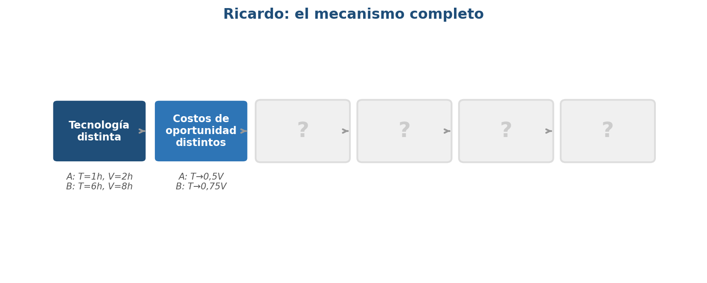
Fuente: Elaboración propia
- Tecnología distinta entre países → costos de oportunidad distintos
- Cada país tiene ventajas y desventajas relativas
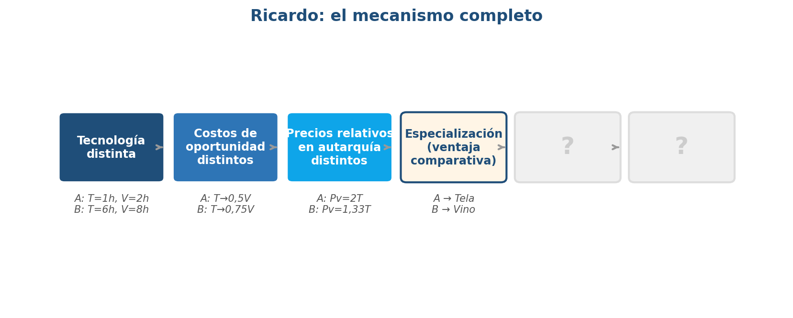
Fuente: Elaboración propia
- Los CO distintos generan precios relativos en autarquía distintos
- Eso define la especialización (ventaja comparativa)
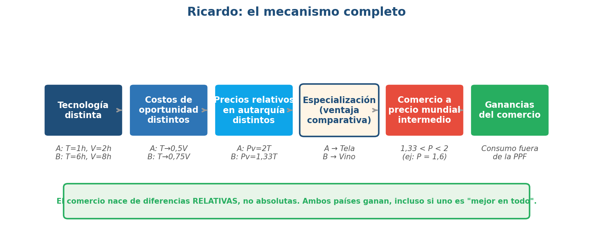
Fuente: Elaboración propia
- Comercian a un precio mundial intermedio → ambos consumen fuera de su PPF
- Resultado: ganancias del comercio para AMBOS, incluso si uno es "mejor en todo"
Paso 1 / 3
¿Cómo "vemos" la ventaja comparativa en datos?
Índice de Balassa (1965): Ventaja Comparativa Revelada (RCA)
- Ricardo habla de ventajas comparativas → pero ¿cómo las medimos?
- Béla Balassa (1965): propone "revelar" la ventaja a partir de lo que efectivamente se exporta
- \(RCA_{i,k} = \frac{X_{i,k} / X_{i}}{X_{w,k} / X_{w}}\) → participación del producto en exportaciones del país vs del mundo
- RCA > 1: el país exporta ese bien más que el promedio mundial → especialización
- RCA < 1: el país está menos especializado que el mundo en ese bien
Argentina: ¿qué revela su patrón exportador?
Composición de exportaciones y especialización sectorial
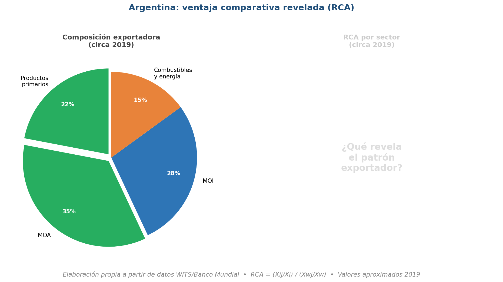
Fuente: Elaboración propia a partir de datos WITS / Banco Mundial
- Exportaciones argentinas: fuerte concentración en productos primarios y agroindustriales
- Soja, cereales, carne, aceites dominan la canasta exportadora
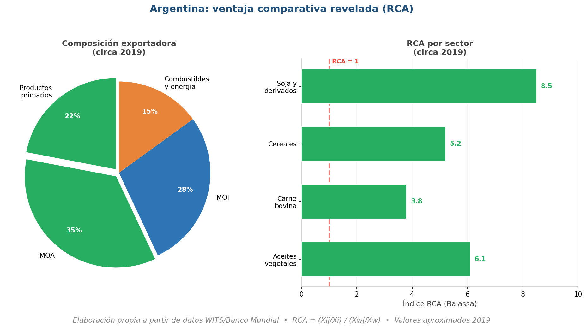
Fuente: Elaboración propia a partir de datos WITS / Banco Mundial
- Sectores con RCA > 1: productos primarios y agroindustriales — especialización revelada
- Argentina exporta proporcionalmente más que el mundo en estos rubros
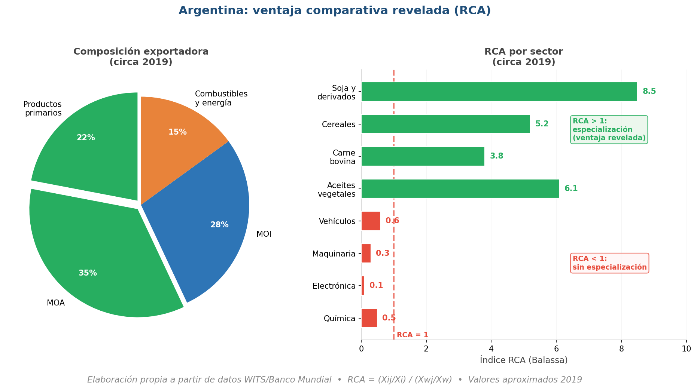
Fuente: Elaboración propia a partir de datos WITS / Banco Mundial
- Sectores con RCA < 1: manufacturas industriales (maquinaria, electrónica, automotriz)
- Pregunta ricardiana: ¿es tecnología o es dotación + historia + política?
- El RCA cambia en el tiempo: refleja transformaciones productivas y política comercial
Paso 1 / 3
Ricardo: motor potente, preguntas abiertas
Cada pregunta abre una clase futura
- Explica: por qué hay comercio incluso entre países muy desiguales. Mecanismo: costos relativos → especialización → ganancias mutuas
- ¿De dónde sale la ventaja comparativa si no es solo tecnología? → Heckscher-Ohlin (Clase 3)
- ¿Quién gana y quién pierde dentro del país? → Stolper-Samuelson (Clase 3), política comercial (Clase 10)
- ¿Por qué hay comercio entre países parecidos y dentro del mismo sector? → Comercio intraindustrial (Clase 4)
- ¿Qué pasa con costos de transporte, empresas dominantes, cadenas globales? → Firmas heterogéneas, CGV (Clase 5)
Lo que vimos hoy
- Mercantilismo: comercio = poder, riqueza = oro, juego de suma cero
- Smith: riqueza = productividad, comercio amplía mercado → división del trabajo → eficiencia
- Ventaja absoluta: cada país produce lo que hace más barato — pero si uno es mejor en todo, no cierra
- Ricardo: lo que importa es el costo de oportunidad (relativo), no la eficiencia absoluta
- Modelo ricardiano: precios relativos en autarquía → especialización → comercio a precio intermedio → ganancias mutuas
- PPF + línea de intercambio: herramienta gráfica que muestra cómo ambos consumen más
- RCA (Balassa): herramienta para "ver" la ventaja comparativa en datos reales
Lecturas para esta clase
Bibliografía del curso
- Lugones, G. et al. — Teorías del Comercio Internacional: sección sobre mercantilismo, Smith, Ricardo, ventaja absoluta y ventaja comparativa
- Krugman, Obstfeld & Melitz — Economía Internacional: capítulo 3 (modelo ricardiano, PPF, ganancias del comercio)
- Para contexto histórico: revisar notas de Clase 1 (etapas del comercio, marco T-R-P)
- Balassa, B. (1965) — "Trade Liberalisation and 'Revealed' Comparative Advantage" (The Manchester School) — lectura opcional
Guía de lectura: preguntas para orientar el estudio
Lugones Cap. 1 (pp. 13-30) y Krugman Cap. 3
- ¿Qué entiende Smith por "riqueza" y en qué se diferencia de la visión mercantilista?
- ¿Por qué la división del trabajo depende del tamaño del mercado? ¿Qué rol cumple el comercio?
- ¿Cuál es la diferencia entre ventaja absoluta y ventaja comparativa? ¿Por qué la segunda es más potente?
- En el modelo ricardiano, ¿de dónde surgen las diferencias de precios relativos entre países?
- ¿Qué condiciones debe cumplir el precio mundial para que ambos países ganen con el comercio?
- ¿Qué es la Frontera de Posibilidades de Producción y por qué con comercio se puede consumir "fuera" de ella?
- Pensando en Argentina: ¿su patrón exportador refleja ventajas comparativas genuinas o hay otros factores en juego?
Material complementario
Videos y documentales recomendados
- "Commanding Heights: The Battle for the World Economy" (PBS, 2002, Ep. 1) — De mercantilismo a Bretton Woods: el debate de ideas que define políticas comerciales
- Ray Dalio — "Principles for Dealing with the Changing World Order" (YouTube, 43 min) — Ciclos de poder y comercio a lo largo de la historia
- "The Ascent of Money" (Niall Ferguson, 2008) — Historia financiera: cómo el comercio y las finanzas transforman las naciones
- "Conociendo al capital: David Ricardo" (Canal Encuentro, 26 min, en español) — Documental argentino sobre Ricardo y su contribución a la economía política
- "Capitalism" Ep.3: Ricardo and Malthus (Ilan Ziv, 2014, 52 min) — Con entrevistas a Piketty, Varoufakis y Chomsky
- "The Deceptive Promise of Free Trade" (DW Documentary, 2018, YouTube, 43 min) — Crítica al libre comercio: la brecha entre teoría ricardiana y realidad
- Khan Academy: Ventaja comparativa (khanacademy.org, en español, 10-15 min) — Ejercicios numéricos para reforzar costos de oportunidad y PPF
Próxima clase: modelo neoclásico y Heckscher-Ohlin
Clase 3 — 9 de abril
- ¿Y si la ventaja comparativa no viene de la tecnología sino de los factores de producción?
- Modelo neoclásico estándar: curvas de transformación y precios relativos
- Heckscher-Ohlin: tierra, trabajo y capital como fuente de especialización
- Stolper-Samuelson: ¿quién gana y quién pierde dentro del país?
- Paradoja de Leontief: cuando la teoría no cuadra con los datos
¿Preguntas?
Economía Internacional | Clase 2